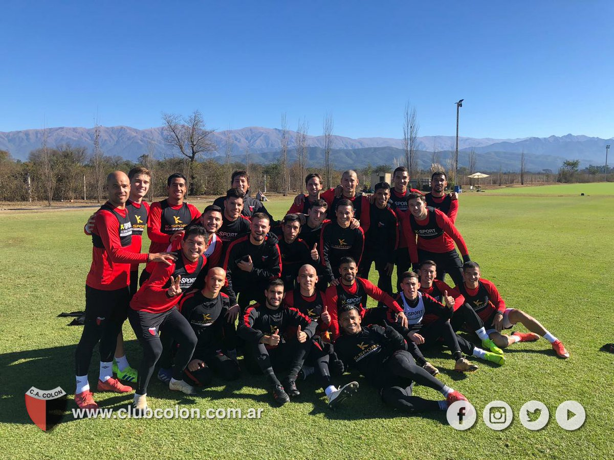

Bienvenid@s, soy Pablo Saez, fanatico de colon...
El Sabalero realiza la pretemporada en Salta donde enfrentará este sábado a Gimnasia de Jujuy en un partido amistoso de 60 minutos. El 29 de junio jugará ante Newell´s mientras que el 5 de julio visitará a Patronato.
El sabalero de Pablo Lavallen, quiere seguir afianzando su confianza, para ello tiene de cara dos amistosos de 60 minutos contra Newell´s el 29 de junio y Patronato el 5 de julio. Colon tiene que sumar todos los puntos posibles en el campeonato local para no quedar mal posicionado con respecto al descenso.
De cara a la copa sudamerica, recibe al Club Atletico Argentinos en el cementerio de los elefantes el 11/7.
Suscribete